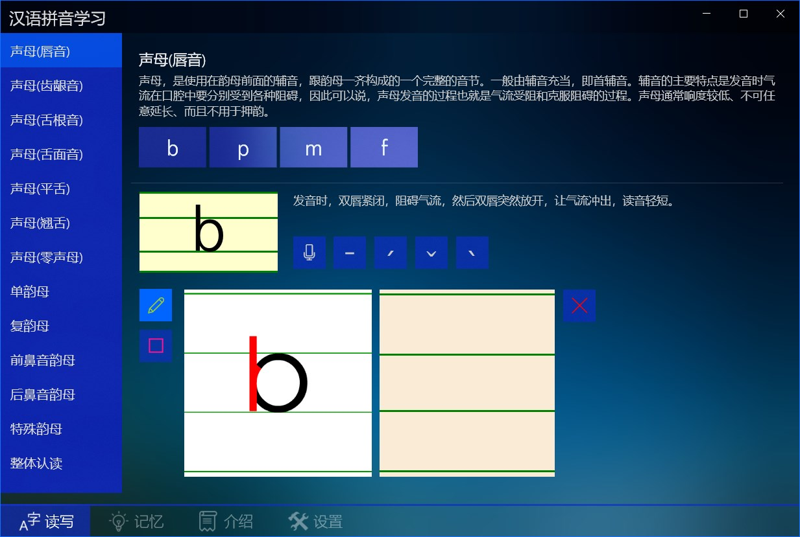
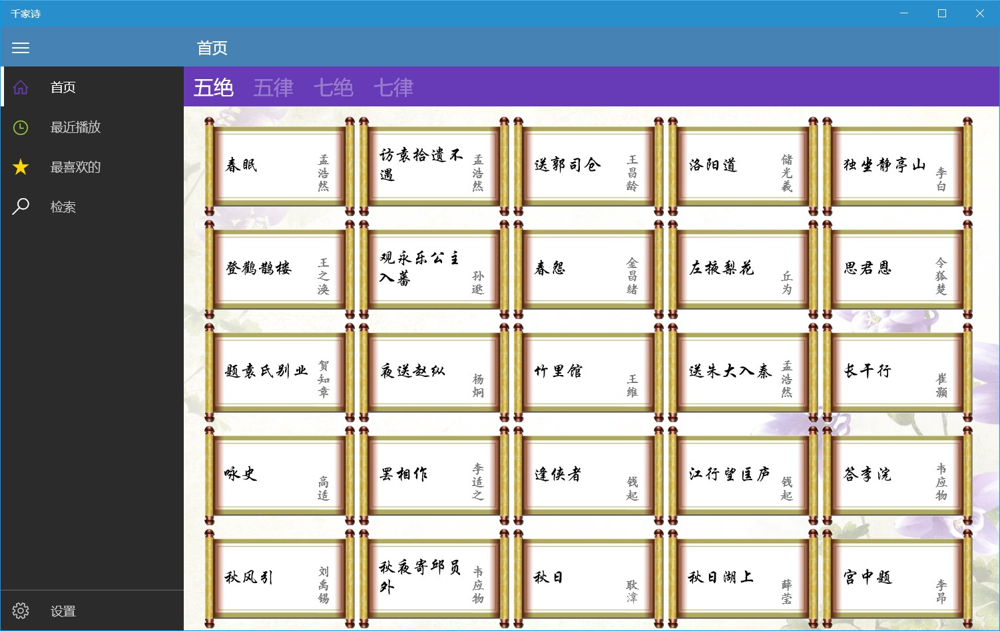
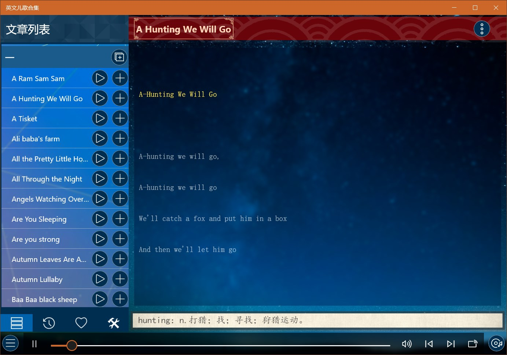

教育类应用介绍
启蒙教育
汉语拼音
可以用来进行基础的汉语拼音教育，包含拼音介绍、发音、书写笔顺、记忆方法等功能，还具有书写功能，可以练习拼音书写。

启蒙教育
分为国学启蒙（包含笠翁对韵、声律启蒙、增广贤文、百家姓、三字经、千字文、弟子规）、儿歌（包含三字儿歌、经典动画主题曲、经典儿歌等）、童谣（包含童谣和绕口令）、故事四大类近400个音频。

国学启蒙
包含《百家姓》、《三字经》、《千字文》、《弟子规》、《蒙求》、《神童诗》及《续神童诗》七大经典篇章，提供朗读音频、拼音、注释或者翻译。

德育启蒙
包含中国古代经典德育著作四部：《名贤集》、《增广贤文》、《孝经》、《二十四孝》，提供朗读音频、拼音、注释或者翻译。

笠翁对韵
包含《笠翁对韵》上下两卷共30篇，提供朗读音频、拼音及注释。

骈句启蒙
包含《龙文鞭影》，《声律启蒙》、《笠翁对韵》、《训蒙骈句》四大骈句启蒙著作，每部包含上下两卷，每卷15篇，总共120篇，提供朗读音频、拼音、注释及书籍介绍。

经典儿歌
包含经典儿歌、动画主题曲、唐诗儿歌、三字经儿歌、笠翁对韵儿歌等百余首儿歌。

千家诗
包括李白、杜甫、王维、孟浩然、苏轼、王安石等作者的五绝、五律、七绝、七律四类诗歌共计两百余篇，提供朗读音频、收藏及按标题/作者搜索功能。

唐诗300首
包含了《唐诗三百首》的全部诗作，根据唐诗类型分为五言和七言两大类，每类包括绝句、律诗、古诗、乐府四类，提供朗读音频、收藏及按标题/作者搜索功能。

宋词300首
基本包含了《宋词三百首》的全部诗作，提供朗读音频、收藏及按标题/词牌/作者搜索功能。

极简英文儿歌
非常简单的英语启蒙儿歌，歌词非常简单，音调也易学，曲风欢乐、旋律轻快、歌词简单，提供音频及单词注释。

迪士尼英文儿歌
包含100首经典英文童谣，提供音频及单词注释。

苏西托曼儿歌
苏西托曼Susie Tallman是美国著名女歌唱家，专注演唱儿童歌曲。包含音频和单词注释，可以用来哄宝宝入眠同时潜移默化的熟悉英语环境。

鹅妈妈童谣
英国民间的童谣集，包含儿歌、谜语、催眠曲、字母歌、绕口令、动物歌等，提供音频及单词注释。

英文儿歌合集
包含经典英文儿歌及童谣160余首，提供音频及单词注释。
